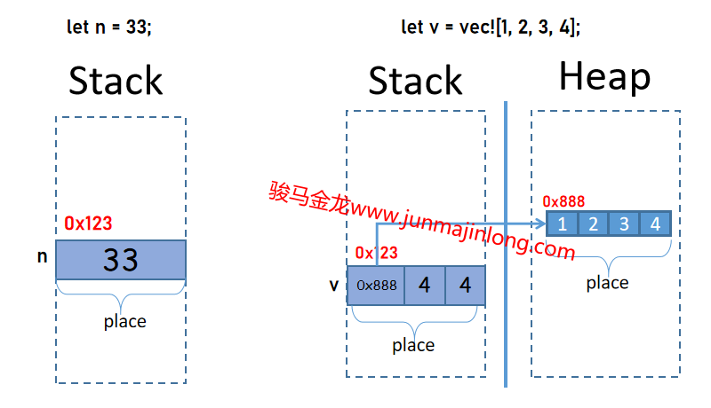
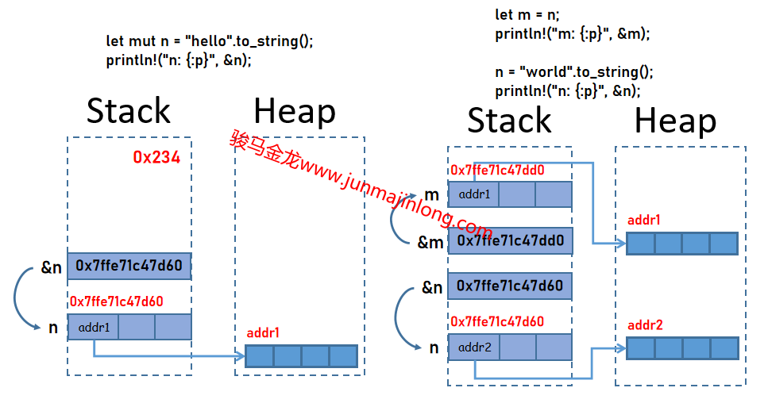

Rust位置表達式和值
在Rust中，非常有必要理解的概念是位置表達式和值，或者簡化為位置和值，理解這兩個概念，對理解Rust的內存佈局、引用、指針、變量等等都有很大幫助。
位置就是某一塊內存位置，它有自己的地址，有自己的空間，有自己所保存的值。每一個位置，可能位於棧中，可能位於堆中，也可能位於全局內存區。
值就是存儲到位置中的數據(即保存在內存中的數據)。值的類型有多種，如數值類型的值、字符類型的值、指針類型的值(包括裸指針和胖指針)，等等。
通過示例來理解變量、位置和值的關係
最簡單的，let聲明變量時，需要產生一個位置來存放數據。
對於下面的代碼：
#![allow(unused)] fn main() { let n = 33; }
對應的內存如下圖左側所示。
其中：
- n稱為變量名。變量名是語言層面上提供的一個別名，它是對內存位置的一個人類可讀的代號名稱，在編譯期間，變量名會被移除掉並替換為更低級的代號甚至替換為內存地址
- 這裡的變量名n對應棧中的一個位置，這個位置中保存了值33
- 位置有自己的內存地址，如圖中的
0x123 - 有時候，會將這種聲明變量時的位置看作是變量(注意不是變量名)，或者將變量看作是位置。無論如何看待兩者，我們內心需要明確的是，變量或這種位置，是棧中的一塊內存
- 每個位置(或變量)，都是它所存放的值的所有者。因為每個值都只能存放在一個位置中，所以每個值都只能有一個所有者

上面是將數值33賦值給變量，Rust中的i32是原始數據類型，默認i32類型的值直接保存在棧中。因此，左圖的內存位置中，僅僅只是保存了一個數值33。
如果賦值給變量的是保存在堆中的數據(例如Vec類型)，那麼變量中保存的是該數據的胖指針。
#![allow(unused)] fn main() { let v = vec![1, 2, 3, 4]; }
其內存佈局如右圖所示。在右圖中，有兩個位置：一個位置在堆內存中，用於存放實際數據，它是由一連串空間連續的小位置組成的一個大位置，每個小位置存放了對應的值；第二個位置在棧中，它存放的是Vec的胖指針。
這兩個位置都有自己的地址，都有自己的值。其中，棧中的那個位置，是變量聲明時顯式創建的位置，這個位置代表的是Vec類型的變量，而堆中的位置是自動隱式產生的，這個位置和變量沒有關係，唯一的關聯是棧中的那個位置中有一根指針指向這個堆中的位置。
需要說明的是，對於上面的Vec示例，Vec的值指的是存放在棧中那個位置內的數據，而不是堆中的存放的實際數據。也就是說，變量v的值是那個胖指針，而不是堆中的那串實際數據。更嚴格地說，Vec類型的值，指的是那個胖指針數據，而不是實際數據，變量v的值是那個胖指針而不是實際數據，變量v是胖指針這個值的所有者，而不是實際數據的所有者。這種變量和值之間的關係和其它某些語言可能有所不同。
理解變量的引用
Rust中的引用是一種指針，只不過Rust中還附帶了其它編譯期特有的含義，例如是引用會區分是否可變、引用是借用概念的實現形式。
但不管如何，Rust中的引用是一種原始數據類型，它的位置認在棧中，保存的值是一種地址值，這個地址指向它所引用的目標。
關鍵問題，引用所指向的這個目標是誰呢？這裡有幾種讓人疑惑的指向可能：
- (1).指向它所指向的那個變量(即指向位置)
- (2).指向位置中的值
- (3).指向原始數據
在Rust中，正確的答案是：指向位置。(參考鏈接：Operator expressions - The Rust Reference (rust-lang.org))
例如：
#![allow(unused)] fn main() { let n = 33; let nn = &n; }
在這個示例中，變量n對應棧中的一個位置，這個位置中保存了數據值33，這個位置有一個地址0xabc，而對於變量nn，它也對應棧中的一個位置，這個位置中保存了一個地址值，這個地址的值為0xabc，即指向變量n的位置。

實際上，上面的三種可能中，(1)和(2)沒有區別，因為值和位置是綁定的，指向值和指向位置本就是相同的，但是有的地方說是指向值的，理由是不能對未賦值過的的變量進行引用，不能對值被移走的變量進行引用(所以位置和某個值不總是綁定在一起的)。但換一個角度思考，Rust編譯器會在建立引用的時候先推斷好此刻能否引用，只要能成功建立引用，(1)和(2)就沒有區別。
為什麼引用中的地址不是指向原始數據呢？例如，對於下面的示例，變量v為什麼不是指向堆中的那個位置的？
#![allow(unused)] fn main() { let vv = vec![1, 2, 3, 4]; let v = &vv; }
從位置和值的角度來理解。例如上面的let v = &vv;，vv是一個位置，這個位置保存的是Vec的胖指針數據，也就是說，vv的值是這個胖指針而不是堆中的那塊實際數據，所以v引用vv時，引用的是vv的位置，而不是實際數據。
此外，Rust的宗旨之一就是保證安全，不允許存在對堆中同一個內存的多個指向，因為這可能會導致重複釋放同一塊堆內存的危險。換句話說，至始至終，只有最初創建這塊堆內存的vv變量才指向堆中這塊數據。當然，vv中的值(即棧中位置中保存的值)可能會被移給另外一個變量，那麼這個接收變量就會成為唯一一個指向堆中數據的變量。
為什麼不允許對堆中同一個內存的多個指向，卻允許對棧中同一個數據的多個指向呢？例如，下面的代碼中，變量x和變量y中保存的地址都指向變量n的位置：
#![allow(unused)] fn main() { let n = 33; let x = &n; let y = &n; }
這是因為棧內存由編譯器負責維護，編譯器知道棧中的某個內存是否安全(比如判斷變量是否離開作用域被銷燬、判斷生命週期)，而堆內存是由程序員負責維護，程序員的行為是不安全的。
說了這麼多，大概也能體會到一點Rust的行為模式了：儘可能地讓涉及到內存安全的概念實現在棧上，儘可能讓程序員遠離對堆內存的操作。
何時創建位置和值
以下幾種常見的情況會產生位置：
- 變量初始化時會產生位置(嚴格來說，是變量聲明後產生位置，但未賦值的變量不能使用，且會被優化掉)
- 調用函數時的參數和返回值會產生位置
- 模式匹配過程中如果使用了變量則也會產生位置
- 引用和解引用也會產生位置
作為總結：
- 會產生變量的時候，就會產生位置
- 需要保存某個值的時候，就會產生位置
- 會產生新值的時候(例如引用會新產生一個地址值，解引用會產生對應的結果值)，就會產生位置
- 使用值的時候，就會產生位置
其中有的位置是臨時的中間變量，例如引用產生值會先保存在臨時變量中。
以上是顯式產生位置的方式，還有隱式產生的位置。例如，在初始化一個vec並賦值給變量時，堆內存中的那個位置就是隱式創建的。本文中出現的位置，指的都是棧中的位置，也就是由編譯器負責維護的位置，本文完全不考慮堆內存中的位置，因為堆中的位置和我們理解Rust的各種規則沒有關係，Rust暴露給程序員的、需要程序員理解的概念，幾乎都在棧中。
為什麼要理解何時產生位置呢？這涉及到了Move語義和Copy語義。如果不知道何時會產生位置，在對應情況下可能就會不理解為什麼會發生移動行為。
例如，match模式匹配時，在分支中使用了變量，可能會發生移動。
#[derive(Debug)] struct User { vip: VIP, } #[derive(Debug)] enum VIP { VIP0, VIP1, VIP2, VIP3, } fn main() { let user = User {vip: VIP::VIP0}; match user.vip { VIP::VIP0 => println!("not a vip"), a => println!("vip{:?}", a), // "聲明"了變量a，發生move // ref a => println!(), // 借用而不move } println!("{:?}", user); // 報錯 }
在上面的match匹配代碼中，第二個分支使用了變量a，儘管匹配時會匹配第一個分支，但Rust編譯器並不知道匹配的結果如何，因此編譯器會直接move整個user到這個分支(注：從Rust 2021開始，不會再因為要移動某個內部元素而移動整個容器結構，因此Rust 2021版中，不再move整個user，而是隻move單獨的user.vip字段)。
位置一旦初始化賦值，就會有一個永遠不變的地址，直到銷燬。換句話說，變量一旦初始化，無論它之後保存的數據發生了什麼變化，它的地址都是固定不變的。也說明了，編譯器在編譯期間就已經安排好了所有位置的分配。
fn main() { let mut n = "hello".to_string(); // n是一個棧中的位置，保存了一個胖指針指向堆中數據 println!("n: {:p}", &n); // &n產生一個位置，該位置中保存指向位置n的地址值 let m = n; // 將n中的胖指針移給了m，m保存胖指針指向堆中數據，n變回未初始化狀態 println!("m: {:p}", &m); // &m產生一個位置，該位置中保存指向位置m的地址值 n = "world".to_string(); // 重新為n賦值，位置n保存另一個胖指針，但位置n還是那個位置 println!("n: {:p}", &n); // &n產生一個位置，該位置中保存指向位置n的地址值 }
輸出結果：
n: 0x7ffe71c47d60
m: 0x7ffe71c47dd0
n: 0x7ffe71c47d60
它的內存分佈大概如下：

位置和值與Move語義、Copy語義的關聯
在Rust中，賦值操作，實際上是一種值的移動：將值從原來的位置移入到目標位置。如果類型實現了Copy trait，則Copy而非Move。
例如：
#![allow(unused)] fn main() { let x = 3; }
這個簡單的語句實際上會先聲明一個變量，剛聲明時的變量並未賦值(或者按照某種說法，被初始化為初始值)，在某個之後的地方才開始將數值數值3賦值給變量，這裡賦值的過程是一個移動操作。
大概過程如下：
#![allow(unused)] fn main() { let x i32; ... x = 3; }
將變量賦值給其它變量，就更容易理解了，要麼將源變量位置中的值(注意是位置中的值，不是實際數據)移動到目標位置，要麼將位置中的值拷貝到目標位置。
位置的狀態標記
比較複雜的是，位置不僅僅只是一個簡單的內存位置，它還有各種屬性和狀態，這些屬性和狀態都是編譯期間由編譯器維護的，不會保留到運行期間。
包括且可能不限於如下幾種行為：
- 位置具有類型(需注意，Rust中變量有類型，值也有類型)
- 位置保存它的值是否正在被引用以及它是共享引用還是獨佔引用的標記(borrow operators: The memory location is also placed into a borrowed state for the duration of the reference)
- 還能根據位置的類型是否實現了Copy Trait來決定該位置的值是移走還是拷貝走
更多關於借用和移動語義、拷貝語義，留待後文。